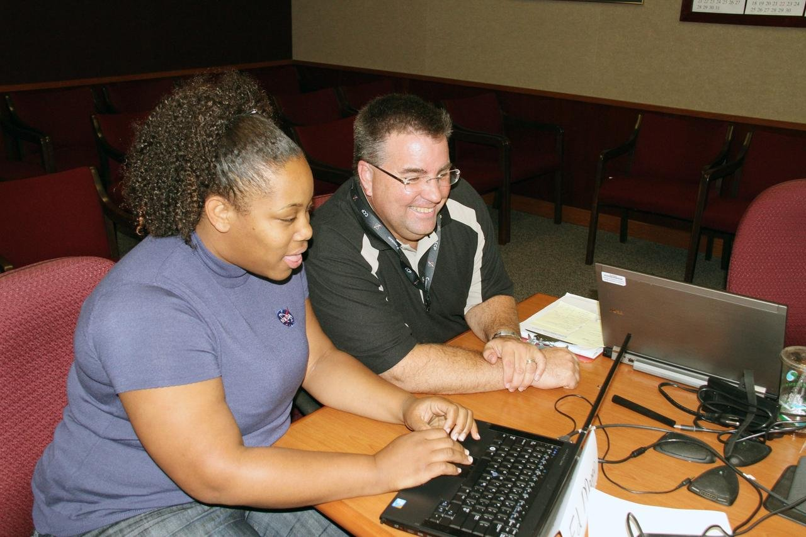

What is Open Science?
Open science is a research and scientific practice that emphasizes transparency, accessibility, and collaboration in the process of conducting and disseminating scientific work. It involves making research methods, data, and findings openly available to fellow researchers and the public
Overall open science aims to accelerate the pace of scientific discovery, promote innovation, and increase the societal impact of research by removing barriers to access and fostering a culture of collaboration and transparency in the scientific community.
